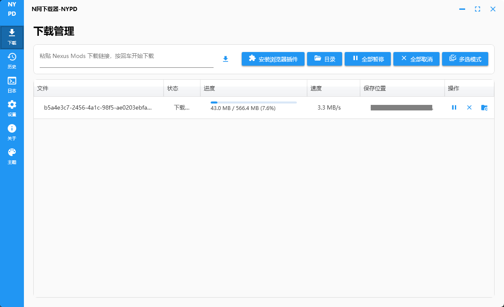
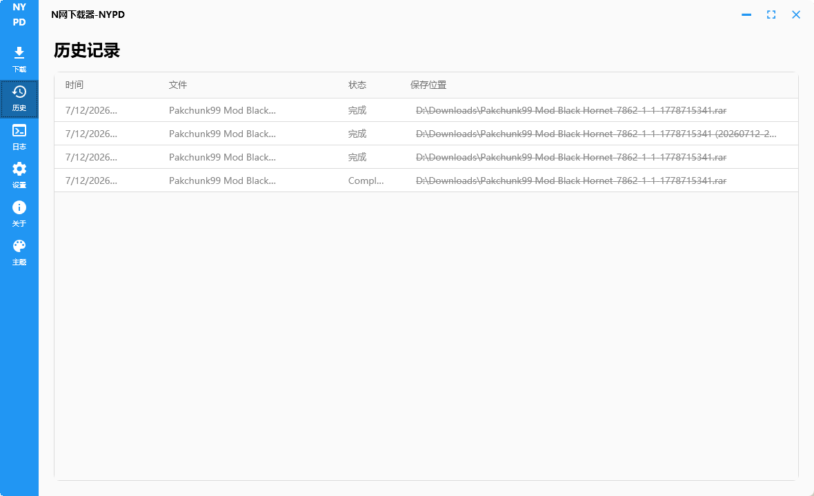
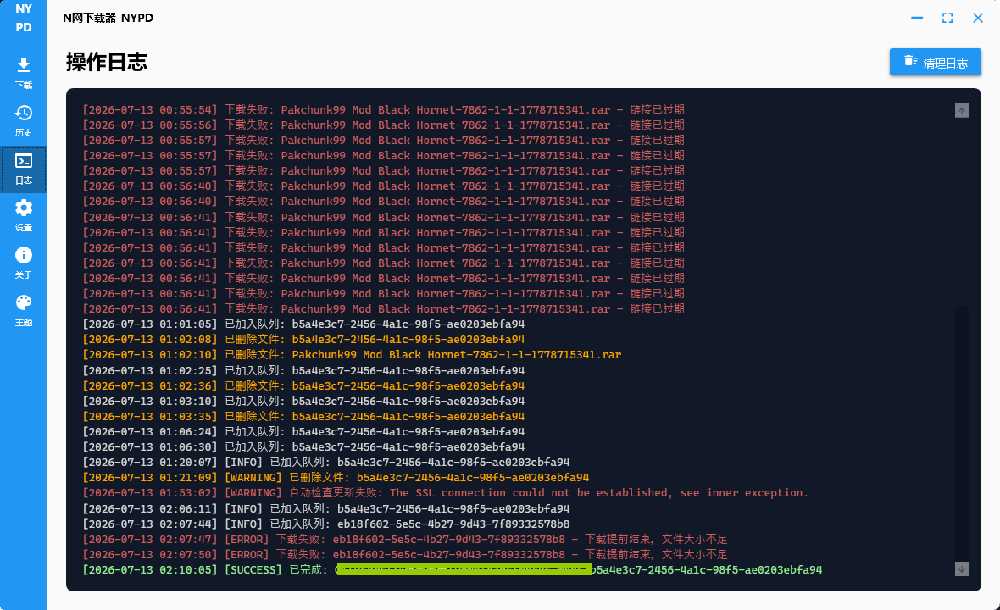
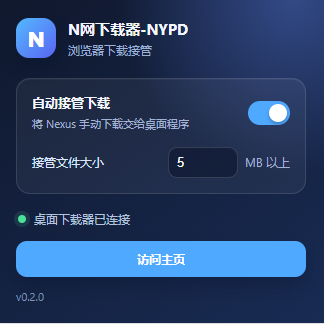

大文件交给它
Nexus Mods 的下载开始后，插件会把适合接管的文件送进 NYPD；几 MB 的小文件（用户指定大小）仍然留给浏览器。
NYPD · Nexus YZ Patrol Downloader
下载 N 网 Mod 时，自动捕获下载请求，下载器自动识别并准备下载。
正在获取最新版本…

Nexus Mods 的下载开始后，插件会把适合接管的文件送进 NYPD；几 MB 的小文件（用户指定大小）仍然留给浏览器。
分段下载，能将普通用户默认以 KB/s 计的速度提升若干。如果有代理，更推荐走代理下载。
若干功能集于一体，界面清爽，即开即用。


浏览器插件

先安装并打开 NYPD。
按软件里的提示，把浏览器插件加载进去。
回到 Nexus Mods 正常点击下载，大文件会自己出现在 NYPD 里。